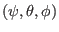
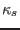
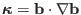
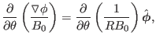
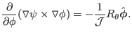
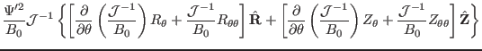
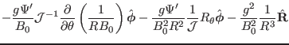

Next: Expression of normal curvature Up: Numerical results for EAST Previous: Numerical results of global
In this section, we derive formulas for calculating the geodesic curvature and
normal curvature in magnetic surface coordinate system
.
The derivation looks tedious but the final results are compact (especially for
the geodesic curvature ). The magnetic curvature is defined by
, which can be further
written as
|  | (264) |
|  | (265) |
|  | |||
|  |